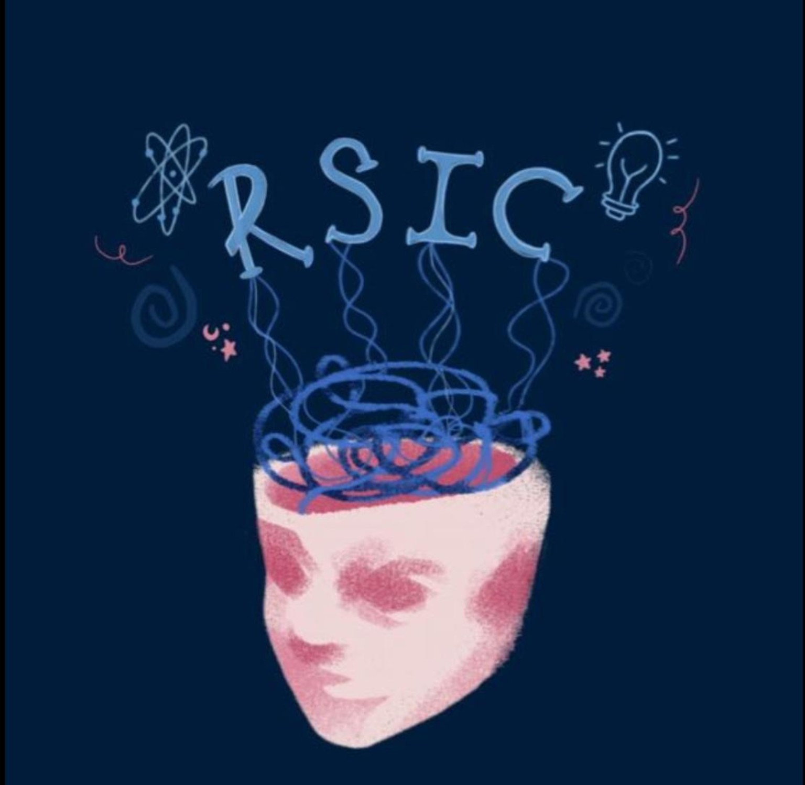

RSIC

Different minds. One universe.
We're a student-run inter-school competition with 10 realms, so you might be writing a maths proof while your best friend performs a 10-minute play.
Science, technology, engineering and mathematics, plus everything that happens when curiosity refuses to stay in one box.
The wait ends in
Friday 13 to Sunday 15 November 2026, from 1:45 PM PKT
00Days
00Hours
00Minutes
00Seconds
The realms
Ten worlds. One event.
Choose your battlefield. Every realm has its own language, pressure and way of thinking. Rules, judging criteria and schedule included.
01 · MathematicsThe Cartesian Realm
02 · Pure SciencesProject Nexus
03 · BiologyThe Watson Street
04 · ChemistryCurie's Chamber
05 · PhysicsAstral Axiom
06 · Computer ScienceHypaxia's Enclave
07 · PsychologyPterion's Scantum
08 · Environmental BusinessGaia's Exchange
09 · Film & DramaThe Joker's Act
10 · Law & SociologyAthena's Bench
Explore
Eight ways into RSIC.
One event, several entry points. Read the philosophy, meet the realms, or skip straight to the fine print.